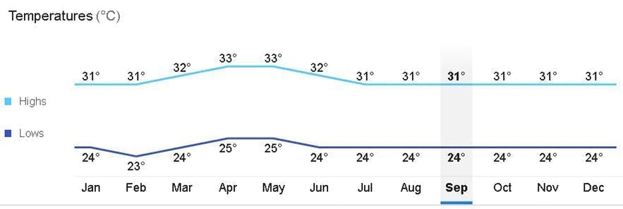

Experience the ultimate island life in Palawan, the Last Frontier of the Philippines. Learn about its top destinations. how to get around, and the best things to see and do there in this article.
Palawan, one of the best places to visit in the Philippines, is consistently ranked as one of the best islands in the world, and for a good reason.
It boasts white sand beaches and islands, clear blue waters, a spectacular variety of marine life and shipwreck sites, and majestic towering limestone cliffs. If you love swimming, island-hopping, and diving, this biggest island province in the Philippines should be in your travel bucket list.
Palawan has over 1,700 pristine islands and islets scattered in its four main destinations: El Nido, Puerto Princesa, Coron, and San Vicente.
Palawan is an island province of the Philippines located in the MIMAROPA region. Its capital is Puerto Princesa City, and it is the largest province in the country in terms of total area of jurisdiction. The islands of Palawan stretch from Mindoro in the northeast to Borneo in the southwest.
The majority of your activities in Palawan are highly dependent on the weather because they're located outdoors. That's why it's best to plan your trip around the dry months in the Philippines and check weather updates first to avoid canceled tours or rough currents, especially when doing island-hopping tours in Palawan.
Dry and Summer Season | November to MayThe best time to go to Palawan and its destinations is during the dry summer season, from November to May. The warmest months are from March to April, the summer season in the Philippines. Palawan tours, especially the underground river tour and island-hopping tours, are best maximized during these months.
However, this is also the peak season since most locals prefer to go to islands and beaches during this time. It is highly recommended to book your tours in advance during the summer season. You can even avail of private tours if you’re in a big group if you prefer the exclusivity.
Climate and WeatherYou can expect a warm tropical climate almost all year round in Palawan, except in the rainy season, usually around July to September. The month with the most rainfall is during September.
The warmest months are from March to April, with temperatures reaching 33°C. The month with the lowest degrees are from November to February with an average temperature of 23°C but is still dry. Here's an overview of the monthly temperature in Palawan:

What to WearThe best clothes to wear when you’re exploring Palawan are those made with light and breathable fabric that can also let you move freely. If you’re joining island-hopping or beach tours, you can opt to wear aqua shoes for added safety for your feet when swimming.
If you’re joining land or city tours, make sure to wear comfortable clothes as well and sunglasses, hats, and bring an umbrella to shield you from the sun.